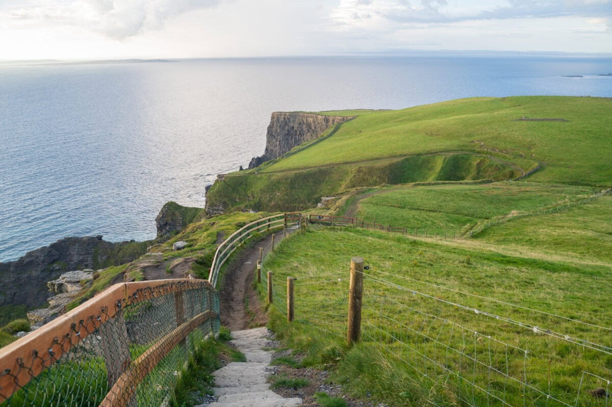
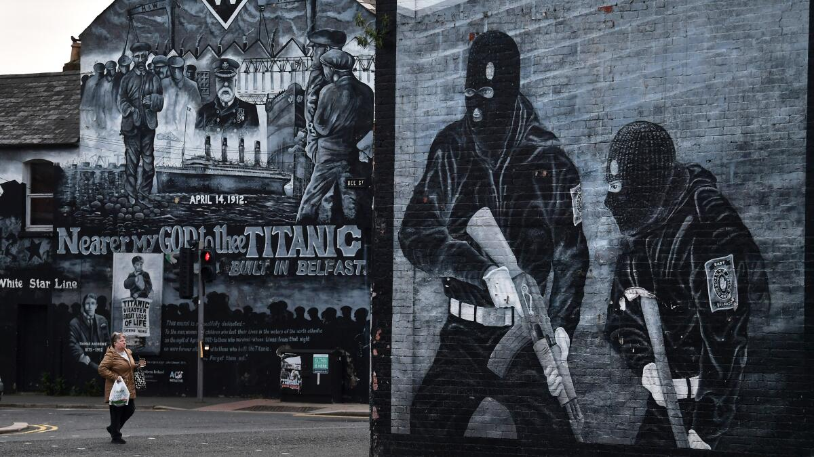
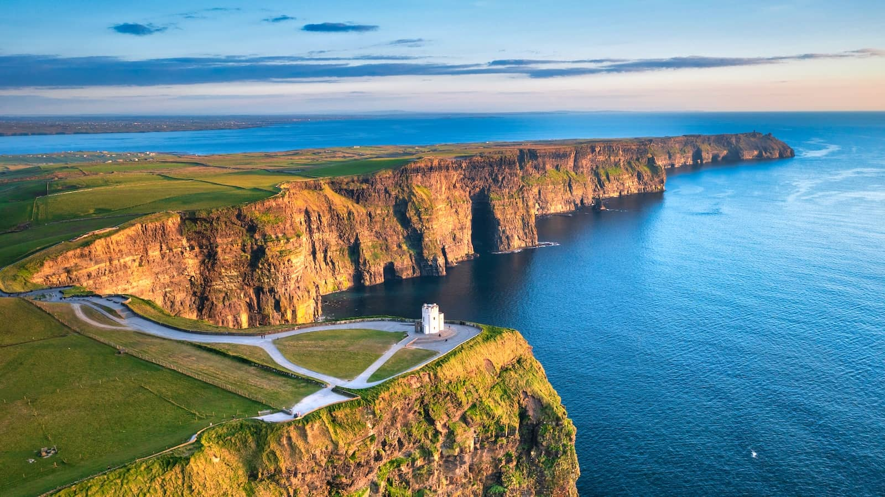
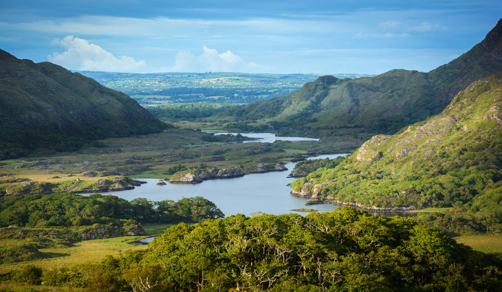

🌍 Geography & Nature
A small island with a very green soul
Perched on the edge of the Atlantic, west of Britain, Ireland has quietly become one of Europe's most beloved corners of the world.

The rolling hills of County Clare — typical Irish countryside.
Ireland is a small island country located in the Atlantic Ocean, directly west of the United Kingdom. Its capital, Dublin, sits on the east coast and serves as the beating heart of the nation — a city of writers, musicians, and good conversation over a cup of tea.
The landscape is unmistakably lush. Hills roll into valleys, rivers carve their way through ancient rock, and the sky — more often than not — carries a soft grey cloud that delivers the gentle rain responsible for all that greenery. It's no wonder the world knows this place as "The Emerald Isle."
The climate is mild, rarely harsh, and always a little unpredictable. Locals will tell you: if you don't like the weather, wait five minutes. And yet the rain is part of what makes Ireland feel alive — wet grass, misty mornings, and air that smells faintly of the sea.
👥 The People
5 million people, one big conversation
The population of Ireland stands at around five million. Most people speak English as their everyday language, though Irish — the ancient native tongue — is still spoken, especially along the western coast in a region called the Gaeltacht.
Irish people are widely known for their warmth and openness. Strangers become acquaintances quickly. Family and community sit at the centre of life here — not as a cliché, but as something genuinely felt.
🎵 Culture & Celebration
Fiddles, dancing & a whole lot of green
Irish culture is vivid and deeply rooted. Traditional music — played on fiddles, tin whistles, and wooden flutes — spills out of pub windows on weekends. Step dancing remains a beloved tradition, kept alive through generations.
The grandest celebration is St. Patrick's Day, held on March 17th. Cities fill with parades, the streets run green, and Irish heritage is celebrated with genuine pride — both at home and across the world.
🛡️ Safety
Quiet streets, a safe and steady nation
Ireland is generally a safe country. Crime rates are low by European standards, with most reported incidents involving petty theft rather than anything more serious. Violent crime exists but remains uncommon, mostly confined to larger urban areas.
An active and trusted police force — the Garda Síochána — works to maintain that calm. Most residents and visitors alike feel comfortable and secure in everyday life.
"The country is very green. People sometimes call it the Emerald Isle — and once you've seen it, you understand why."
📚 Ireland Chronicles: History
A troubled chapter that found its peace
Ireland's past is layered — ancient myths, colonial struggles, and a painful modern conflict. But the story didn't end there.

Belfast murals — echoes of a divided past.
The Troubles — A decades-long conflict in Northern Ireland pitting those who wanted to remain part of the United Kingdom against those seeking to unite the island as one independent republic.
The IRA — The Irish Republican Army was the most prominent paramilitary group during this era, waging a campaign to end British rule in the North and achieve a unified Ireland.
The Good Friday Agreement (1998) — A landmark peace deal brought the conflict largely to an end, opening the door to a new era of cooperation and relative calm.
Today — The situation is peaceful. Ireland looks ahead — building, creating, welcoming. The scars remain part of the story, but they no longer define it.
🏞️ Places Worth Seeing
📍 County Clare: The Cliffs of Moher

Towering sea cliffs stretching for eight kilometres along the Atlantic coast. On a clear day, the Aran Islands are visible on the horizon. Breathtaking in any weather.
📍 County Kerry: The Ring of Kerry

A 179-kilometre scenic loop through some of Ireland's most dramatic landscapes — mountain passes, coastal inlets, stone-walled fields, and villages where time moves slowly.
📍 The Capital: Dublin

A city of contrasts — Georgian squares beside modern glass, ancient manuscripts in the Trinity College library, bustling markets and quiet canal walks. Full of life at every hour.